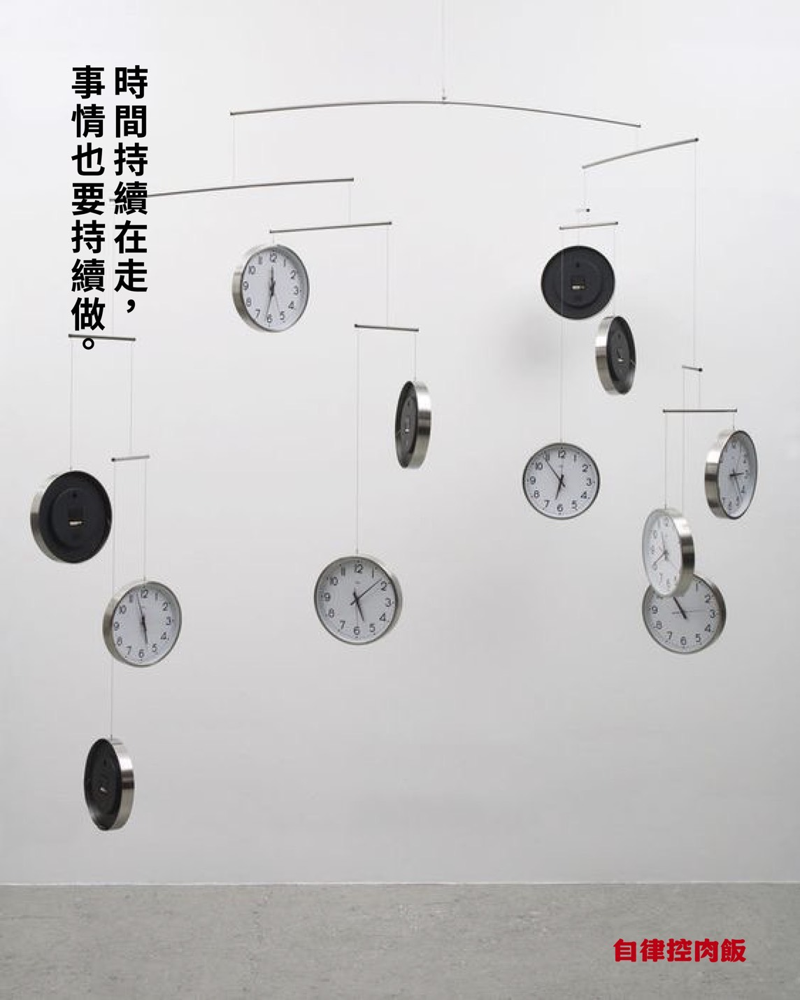

圖片一｜時間流動
時間看似公平，卻也最容易從指縫流走
我們常說沒時間，其實是把主導權交給了別的事物。訊息、情緒、別人的節奏。
掌握時間，並不是要精準地控制每一分每一秒，而是懂得為自己留白、懂得選擇。
當你開始安排而非被推著走，時間便不再是壓力，而是一種從容。
你會發現，自律的核心不是限制，而是自由。

圖片二｜節奏
日子不會因為你停下而變慢
時間依然推動，像河水一樣靜靜流淌。
而我們能做的是在這股流動裡，留下屬於自己的節奏。
自律從來不是與他人競爭的比賽，而是一場與慣性拉扯的旅程。
圖片三｜懶惰
靜默的力量
我們都知道該起身、該開始，但那份「等等再開始」的念頭，總是最致命。
自律不是逼自己更快，而是願意在每一次想逃避的瞬間，仍然回到原點，繼續去做該做的事。
當我們能與那份懶惰共處，卻不被它掌控，自律便不再是枷鎖，而是一種靜靜的力量。
圖片四｜宮崎駿，創作與時間的哲學
宮崎駿：靜默的創造者
真正的自律，是在孤獨中仍堅持創作。
宮崎駿從不追逐潮流，也不迎合觀眾。他相信「慢」是一種對生命的尊重，每一筆手繪的線條都蘊含時間的痕跡。
有人問他為什麼不用電腦製作，他回答：「我喜歡畫的過程，那是一種與世界對話的方式。」
在他的世界裡，自律不是規範，而是長年累積的秩序與愛。
「真正的創作，不是速度，而是靜默中誕生的靈魂。」
他每天固定的作息、對細節的執著、對時間的敬畏，讓他把慢工出細活變成信仰。這份靜默的自律，正是宮崎駿能讓觀眾一再感動的祕密。